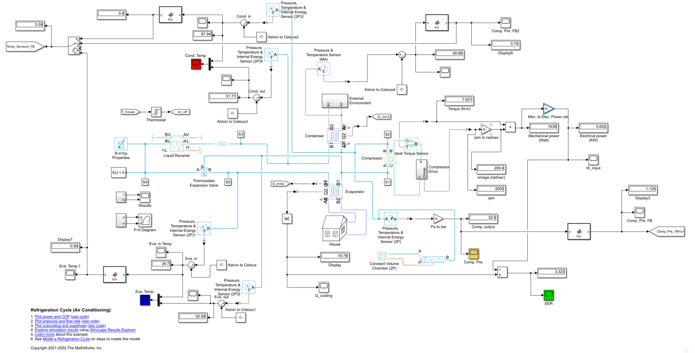
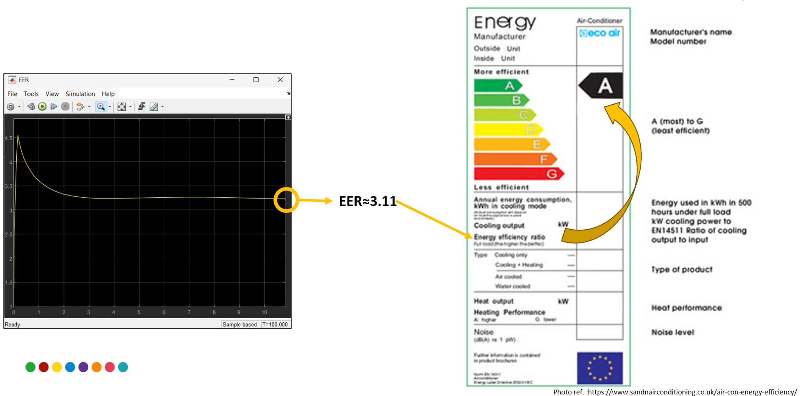

MATLAB · SIMULINK · CONTROL
Energy Efficiency of a Split-Type Air Conditioner
Simulation using temperature and pressure feedback. The reported EER improved from about 3.11 to 3.312, approximately 6.495%.



Project Overview
This project investigated a feedback-based approach to improving the energy efficiency of a split-type air conditioner without relying on inverter technology. Temperature and pressure sensors were incorporated into a MATLAB/Simulink model to provide feedback from the system and surrounding environment. The control logic adjusted fan and compressor operation according to the measured conditions. The model included the room, outdoor environment, evaporator, condenser, compressor and associated refrigeration components. The reported EER increased from approximately 3.11 to 3.312, corresponding to an improvement of about 6.495%. The results indicate that feedback control can reduce unnecessary component operation while maintaining similar thermal conditions in the simulated system.